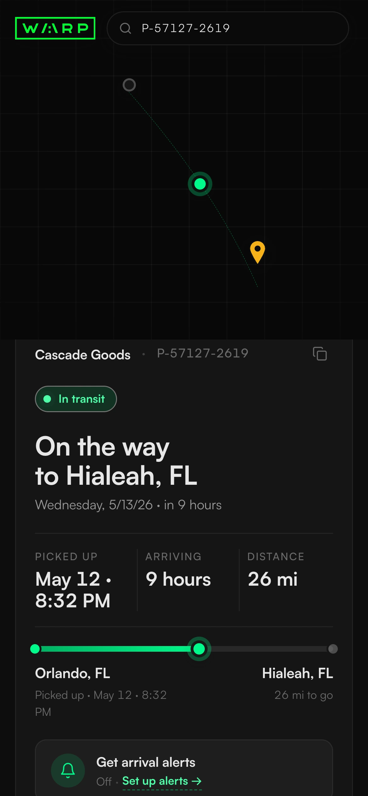
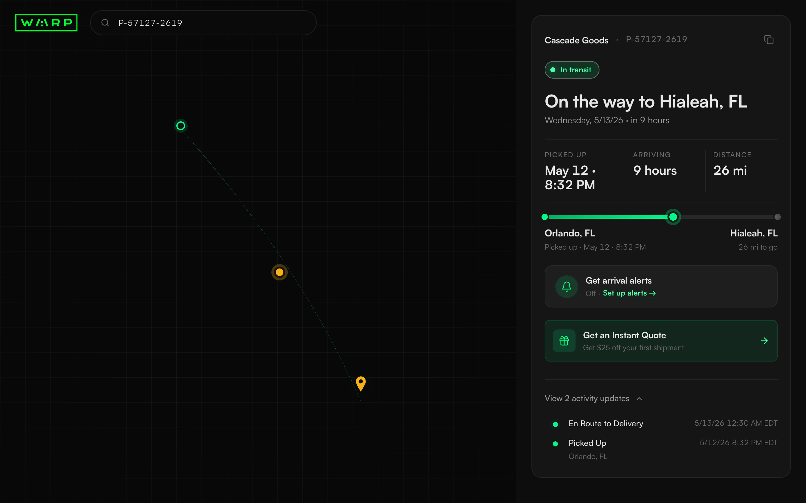
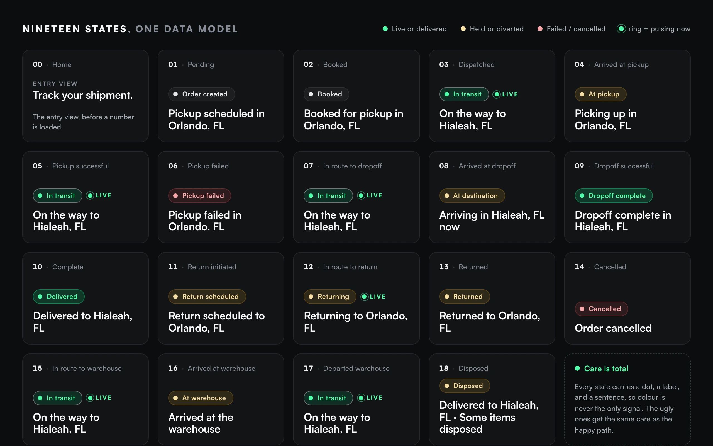
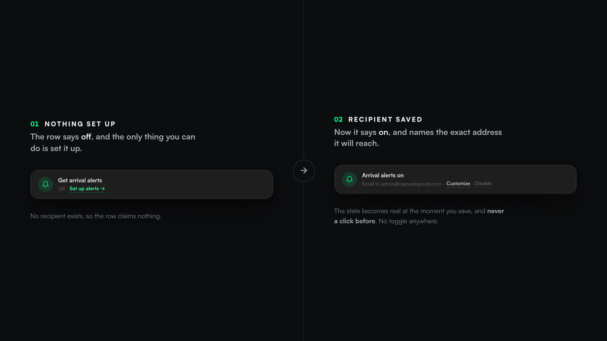
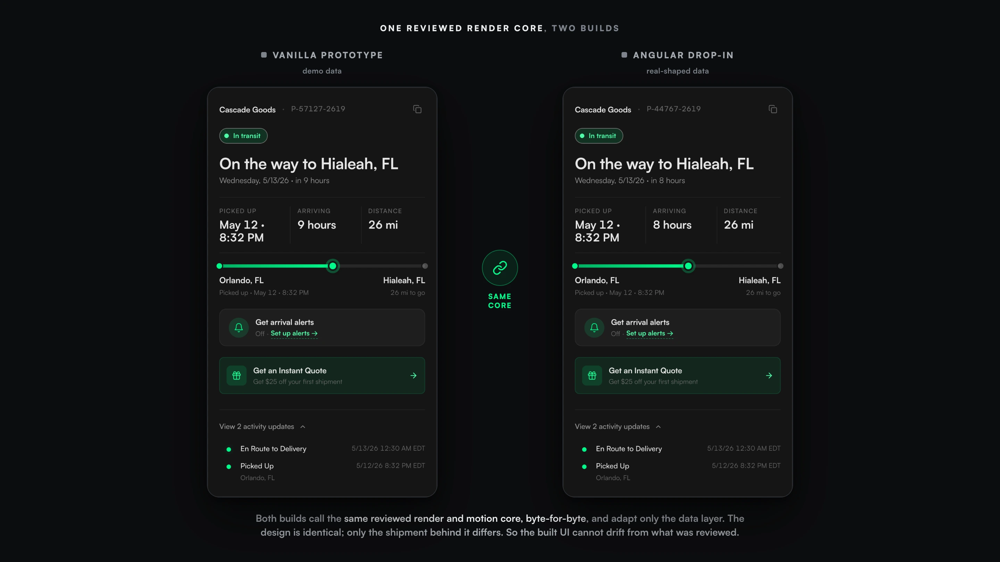

Warp · Public shipment tracking · Redesign
Tracking Page.
The public page a stranger opens to see where their freight is. It is often the only piece of Warp they ever touch, and the old one lied to them in small ways they could feel.
I rebuilt it as an honest-states engine. The AI wrote most of the code under my direction. The problem, the states, the honesty rules, and the judgment are mine.

Counts, not outcomes.
I want to be precise up front, because on this project the honest version is the strong one. There is no adoption chart here and no conversion line. What is real is the scope, the craft, and a status the page cannot fake. Everything below is counted, and I can point to the source.
Solo design deliverable. Rahul owns the production Angular app I was modernizing. Troy, our CRO, set the frame: front end only, keep the map, make it something a customer would trust.
The page told the user less than it knew.
The old page did not lack data. It looked like a hacker terminal, matrix green and monospace on a map, so a person opening it from a Walmart delivery email wondered if their package was even real.
And underneath the look, it was dishonest. The backend knew nineteen distinct shipment states. The headline showed four. So a truck near pickup and a truck near your door both read the same two words, and a cancelled order could still greet you as delivered and ask you to rate it.
Retiredmatrix-green #00ff41 · status cyan #00ffff · saturated yellow #ffff00 · the green-glow shadows · monospace-everywhere
There is not a single percentage on this page.No fake progress bar, no invented ETA confidence, no “87% of the way there.” When the arrival time is unknown, the page says so, and it hides the field instead of printing a comforting number that is not real. On a tracking page a made-up number is the easiest lie to tell, so it is the one I refused to build.
Three rules, each from a caught lie.
I did not start with principles. Each of these came from catching the design tell a small lie, and I wrote it down so I would not repeat it. That is most of what senior looks like here. I still make the mistakes. Each one leaves a rule behind.
Say the true thing.
The headline is computed from the real shipment state, so it can never greet a cancelled order as delivered. When a state has nothing honest to show, the page hides the field rather than faking it. An empty ETA hides its card. An empty history hides its section. No comforting placeholder.
Chrome must equal function.
Every control that looked interactive had to actually do the thing it promised. I killed the decoys by building the function the chrome implied, not by deleting the chrome. The dead “More options” button became a real copy-link button. The “Contact support” button that opened an unrelated pop-up became an actual phone link.
Care is total, motion is earned.
Every state got the same attention, including the ugly ones. Pickup-failed and disposed auto-expand their full history, because that is exactly when a person needs the whole story. The motion is driven by the shipment’s state: one flag drives the live pulse on the status dot, the driver, the newest event, and the map pin, so they can never disagree about whether the shipment is moving.


The alerts control, in three tries.
The best story I have from this project is a small control I got wrong more than once in a single session. The lasting fix was not a widget. It was the habit the misses forced me into.
Off, set up alerts when nothing is configured. On, email to admin@cascadegoods.com, customize or disable once it is. The state becomes real at the moment you save, and never a click before.
Predict what the user does with a control, then criticize your own decision, before someone else has to.The fix that stuck was a way of working. Before I ship a control now I run its three clicks in my head: the first click, the undo, and the cold-land.
Shipped twice, guaranteed identical.
A redesign is worth nothing if it drifts on the way into production. So I froze the backend, proved it, and shipped the design in a way that makes the built UI provably match the reviewed one.
Zero backend change.
I opened a real shipment in the browser and audited every network call. Everything the redesign shows was already on the wire, so the whole thing is a front-end job. That audit is what made the port cheap.
Reskin the data, not the UI.
For the Angular drop-in I refused to re-author the design in templates, because every re-typed pixel is a chance to drift. I reused the reviewed render and motion core byte-for-byte and adapted only the data layer.
A four-agent audit.
I put the drop-in through an adversarial ship-readiness pass that type-checked it under the real TypeScript compiler and caught a strict-compile blocker before a developer ever would. Then it was handed off.

Honest about what it is, and isn’t.
This is a ship-ready, backend-audited, adversarially-reviewed redesign package. I deliberately rolled back a standalone deployable version, because a standalone app was not what the team needed. It is not a launch I can attach traffic to, and I would not draw a chart pretending otherwise.
- Nineteen shipment states designed from one data model, including every failure and terminal state, not just the happy path.
- A twelve-rule engine that computes the true status locally, so the headline cannot contradict the shipment. Verified in the shipped code.
- Zero backend change, proven by a live network audit. Header chrome trimmed from 88px to 56px. Error text at 9.72:1 contrast.
- An independent review of the validation pass came back “ship-ready, no blockers.” The Angular port reuses the reviewed code byte-for-byte.
- Adoption or traffic. The standalone version was rolled back and production integration was handed to the team. I cannot attribute usage to it, so I do not.
- Conversion or support deflection. The promo shipped with analytics hooks specified, never instrumented. No number exists, and this page of all pages has no place for a fake one.
The honest value is the craft and the judgment, which live fully in the work whether or not anyone used it yet: a status a person can trust, every state told truthfully, and a package a single engineer can integrate with a guarantee that the UI matches the design.
The smallest surface is the honest test.
A tracking page has no room to hide behind features. There is one job and one card, and about thirty seconds of someone’s attention. Every choice is either true or it is a small lie a person feels before they can name it.
The AI wrote most of the code. What I brought was the refusal to let it print a comforting number that was not real, on a surface where that would have been the easiest thing in the world to do.